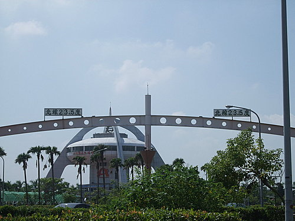
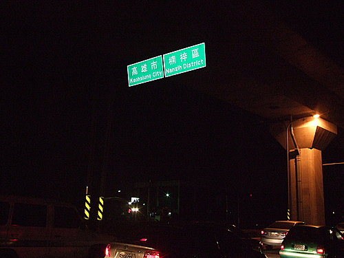

哈囉，各位車友大家好：
現在距離小弟在下我10月中旬完成的環島之行已經好一陣子了，曾答應施董、小超、小揚學長，要把這次環島行過程及心得發表出來，但一直拖到現在，終於到了該履行承諾的時候了…希望藉由我不知死活衝動下所完成的環島行，能夠給各位挑戰環島的無比信心…以下，是這次環島行的一些照片，和我一同再次回味這次環島的甘苦吧!!!
Day1：
出發前，仍不知未來8天的艱辛，所以依然笑得很開心的二人(註：晝面右方，是提議環島的好友阿吉)
第一天從高雄出發到楓港，直接挑戰南迴…
南迴公路上的雙流森林遊樂區(現在還笑得出來，但很快，強勁的落山風就讓我笑不出來了…)

從楓港到壽卡才20公里 ，再怎麼慢，也可以在太陽下山前騎到壽卡吧(2點20分開始上南迴時，如是想)，但是在強勁到令人髮指的落山風的摧殘下，硬是在腿即將爆掉的時候，才勉強爬上南迴最高點--壽卡(我想大家都看得出來，太陽已經下山很久了，現在已經是晚上6點了)
位於台東尚武的旅館…很不怎麼樣的房間，有太多可以嫌棄的地方，但是對於二個已經騎了120公里(尤其是南迴連續20公里的上坡)的人來說，這無疑是沙漠中的綠洲啊!!(阿吉說：「這是我睡過最好睡的爛床!」，深深以為然啊……)
Day2：
美麗的東海岸…以及一覺醒來似乎是一尾活龍的阿吉!!

到知本囉，騎到這也不過才50公里，就已經累到不行orz，才知道早上醒來的充滿活力是根本騙人的!!!所以當下決定，在知本好好休息!!(從下午4點開始除了吃晚餐外，都在睡，直到天明…)
Day3：
沿路的7-11是我們的好朋友
美麗的花東縱谷part1
美麗的花東縱谷prat2
呃…會想拍這個，完全是職業病吧!!
距離花蓮還有121公里(今天後來騎到瑞穗鎮才休息，距離這個牌子還有50幾公里遠啊…)
Day4：
從瑞穗鎮出發前往花蓮市…途經鳳林鎮，買了非常非常喔伊細的滿妹豬腳喔，只有一個字：讚!!而且老板很大方地在門外放了開飲機讓大家免費飲用，對我們單車族來說，是一大福音喔!!真的要給
他鼓鼓掌啦(啪!啪!啪!…)
從花蓮市，搭15：05的莒光號到蘇澳，略過危險的蘇花公路(莒光號的話，每天只有這班可以托運自行車和乘客一起到達目的地，而且必須14：00之前就完成托運，要注意喔，就目睹二位車友錯過時間而不能托運)…
到達目的地-蘇澳火車站囉(全程中最輕鬆地的移動了)!!
從蘇澳火車站再一路狂騎到礁溪(照片中是礁溪火車站前廣場)!!
Day5：
現在雪遂通車後，北宜公路真的是一個騎車的好地方，風景秀麗、車子少!!當然，令人痛苦的上坡除外啊!!(圖：正在挑戰九彎十八連續12公里上坡而強顏歡笑的阿吉!!)
終於看到台北縣縣碑-北宜公路的制高點!!
北宜公路上有名的茶葉蛋
坪林鄉農會農產直銷中心--內有熱情的銷售小姐(嗯…因為她請我們吃了不少東西，所以幫她打打廣告，是一定要的啦!!)
台北市，我來了…
Day6：
從台北三重出發---途經桃園巨蛋
育達??不是在台北嗎，怎麼新竹也有??(今天因為前一天挑戰北宜公路，又沒力了，所以在新竹就休息了)
Day7：
苗栗通霄的海岸
國內自行車大廠捷安特的所在地-大甲鎮
(今天其實是騎乘距離最遠的一天，一早從新竹火車站附近出發，目的地是阿吉位於雲林土庫的家!到大甲鎮時根本還不到預定路程的一半啊!!騎…騎…一直騎，騎到晚上7點過後，大概只剩下意志力在撐了…當看到土庫的路標時，心中只浮現「終於」二字，後面的詞句已經沒力去想了……最後，在晚上9點時到了阿吉家，看了一下里程表，嚇!!!整整180公里啊…)
Day8：
嘉義的北迴歸線座標

紀錄片「無米樂」男主角崑濱伯的故鄉-後壁鄉
到高雄縣了
高雄市，就快到家了…

從來沒有覺得我家街巷的路牌這麼可愛…
在家門口和愛車拍一下，這是一定要的啦
總騎乘時數(51小時35分鐘)…
總騎乘公里數(904公里)…
後記：
這一次的環島，基本上就只是我和阿吉二個人一時的熱血衝動，出發前的二、三個月，阿吉說要去環島，我附和，就這樣定了下來!!但這中間，一丁點的準備 (包含體能訓練、行程規劃等等) 都沒有，而且在環島時，隔天的行程幾乎都是前一天的晚上才定案的，真的是隨性到了一個地步(汗…)
環島後，一些知道我去環島的朋友、學長姐看到我都說：「厚!!聽說你去環島，很厲害喔!!」，本來覺得環島並沒啥了不得的，但聽著聽著，身後的尾巴好像也漸漸翹了起來，哈!哈!人果然是有虛榮心的啊!!其實，想跟大家說的是，「環島」最重要的，並不是在「完成」，而是在過程中，更加認識自己生活成長的土地，並在每個挑戰自己極限而想放棄的時刻鼓勵自己堅持下去，這才是最大的收穫!!
想來，我還是幸運的，在年過30的這個時候，還可以放下包括工作在內的很多事情去完成環島…，希望我們二個不成熟的經驗可以讓大家充滿信心(看，這二個人啥準備都沒有，都能環完了)，只要能排除萬難出發，就已經成功一大半了!體力不好??相信我，毅力真的比體力重要多了!!最後，期待大家都能擁有屬於自己的環島回憶!!!
敬賀河東獅二位帥哥 以強健的體魄 無比的毅力 挑戰自我 環島圓滿成功 並建議社長超哥頒發 河東獅隊員最高榮譽--河東獅錦旗 以資表揚鼓勵 （由其2人全程穿著河東獅車衣， 宣揚社務之精神，尤值敬佩） 河東獅車隊 仰慕者敬啟